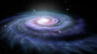

A Via Láctea é a galáxia onde está localizado o nosso sistema solar. Ela possui bilhões de estrelas, planetas, poeira cósmica e gases.
É uma galáxia espiral barrada com cerca de 100 a 400 bilhões de estrelas, incluindo o Sol. Com um diâmetro estimado de 100.000 a 200.000 anos-luz, ela contém o Sistema Solar em um de seus braços (Braço de Órion), situado a cerca de 26-27 mil anos-luz do centro galáctico.
Seu nome vem do latim "via lactea", que significa "caminho de leite", por causa de sua aparência esbranquiçada no céu noturno.
O universo é composto por tudo o que existe: estrelas, planetas, galáxias, poeira cósmica e energia. Ele é extremamente vasto e ainda existem muitas coisas que os cientistas estão tentando descobrir.
Estima-se que o universo tenha aproximadamente 13,8 bilhões de anos. Ele começou com um evento chamado Big Bang, que deu origem ao espaço, ao tempo e a toda a matéria existente.
Desde então, o universo continua em expansão, o que significa que as galáxias estão se afastando umas das outras ao longo do tempo.
As estrelas são enormes esferas de gás extremamente quentes que produzem energia através de reações nucleares. O Sol, por exemplo, é a estrela mais próxima da Terra e é essencial para a existência da vida no nosso planeta.
Existem estrelas muito maiores que o Sol e também estrelas menores. Algumas são tão gigantescas que poderiam engolir vários planetas do tamanho da Terra.
Quando observamos o céu à noite, estamos vendo estrelas que estão a milhares ou até milhões de anos-luz de distância.
Os planetas são corpos celestes que orbitam estrelas. No nosso sistema solar, todos os planetas giram ao redor do Sol. Cada planeta possui características diferentes, como tamanho, temperatura e composição.
Alguns planetas são rochosos, como a Terra e Marte, enquanto outros são gigantes gasosos, como Júpiter e Saturno. Essas diferenças tornam o estudo dos planetas muito interessante para os cientistas.
1957 – Lançamento do Sputnik, o primeiro satélite artificial.
1969 – O ser humano chega à Lua na missão Apollo 11.
1990 – Lançamento do telescópio espacial Hubble.
2021 – O telescópio James Webb começa a explorar o universo profundo.
• Existem bilhões de galáxias no universo.
• A luz do Sol demora cerca de 8 minutos para chegar à Terra.
• Júpiter é o maior planeta do sistema solar.
• Existem estrelas maiores que o nosso Sol milhares de vezes.
"Um pequeno passo para um homem, um grande salto para a humanidade."
Neil Armstrong